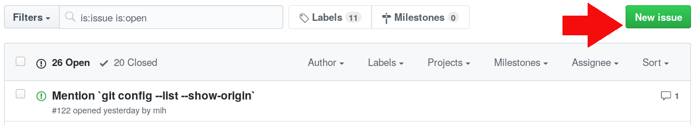
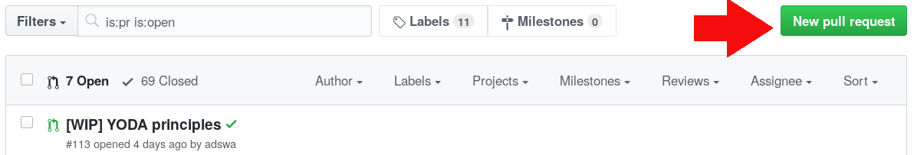

a reproducible paper
| Adina Wagner |
|
Psychoinformatics lab, Jülich Research Center |
A reproducible paper?
Reproducible, as defined first by Claebout & Karrenbach (1992):
Authors provide all the necessary data and the computer codes to run the analysis again, re-creating the results.
My talk is a demonstration of a reproducible paper,
and its advantages.
What are the advantages?
Increasing trust in results and paper
A more convincing case with my research
Easy collaboration
Saving time
"How can I find out more?"
The DataLad handbook
- Written by Laura, Michael, and me
- It lives and grows on Github: https://github.com/datalad-handbook/book
- Starts with all the basic building blocks for using and mastering DataLad, and covers domain-specific use-cases in the later parts - for example a detailed set of instructions for a reproducible paper.
- It is work-in-progress, and your contributions are welcome!
Your contributions are welcome!
- Bug reports or feature requests: Something does not work? Some content is yet missing? Please tell us by opening an issue. 
Your contributions are welcome!
- Typo fixes, or any other content contributions: Do a pull request, and become a contributor! From fixed typos you found to full sections or use-cases. 
The near future
- DataLad will be installed on the cluster
- There will be interactive, opt-in DataLad teaching
- The book is the basis, and a standalone resource for everyone to read and learn with
- Two-weekly support sessions on Thu afternoons for exchange, demonstrations, and trouble-shooting starting in October
- General DataLad questions should be posted to neurostars.org, there will be a dedicated place to collect information for INM7-specifics